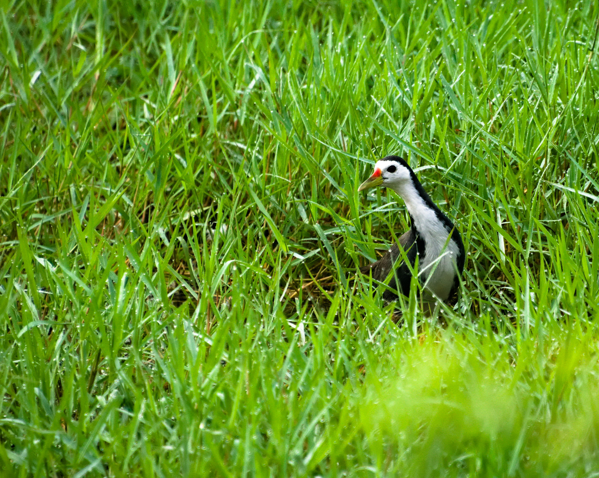

The White-Breasted Waterhen is a dark waterbird with a white face, breast, and belly, a reddish undertail, and long yellowish legs. It is commonly found around freshwater wetlands, ponds, marshes, canals, and overgrown waterways. It often walks through dense vegetation and shallow water searching for insects, molluscs, seeds, and other food. Despite its wetland association, it can occur surprisingly close to human settlements.